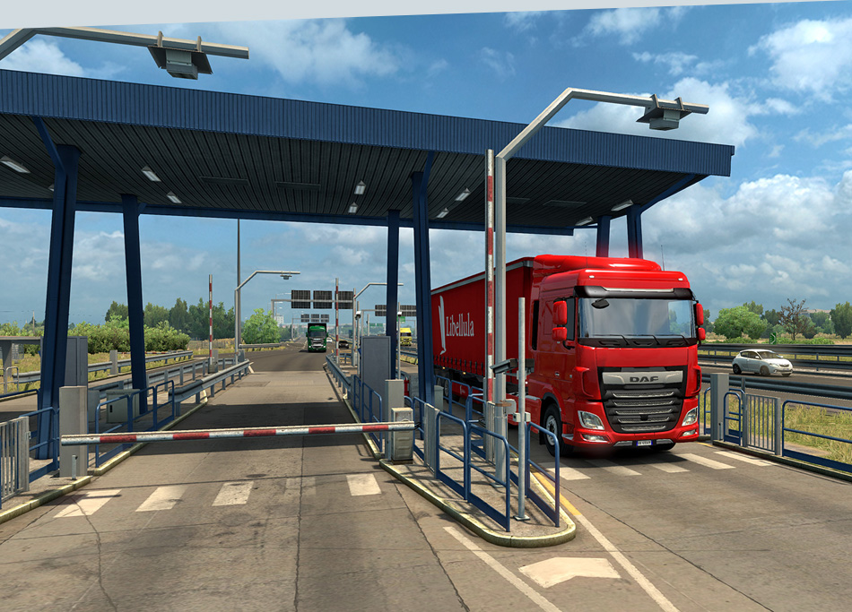

Euro Truck Simulator 2 (commonly abbreviated as ETS2) is a vehicle simulation game developed and published by SCS Software for Microsoft Windows, Linux and OS X and was initially released as open development on 19 October 2012. The game is a direct sequel to the 2008 game Euro Truck Simulator and it is the second video game in the Truck Simulator series. The player can drive one of a choice of articulated trucks across a depiction of Europe, picking up cargo from various locations and delivering it. As the game progresses, it is possible for the player to buy more vehicles, depots, and hire other drivers to work for them.
